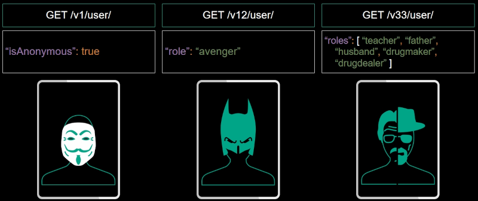
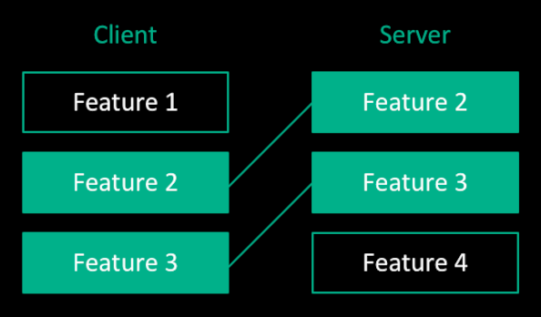
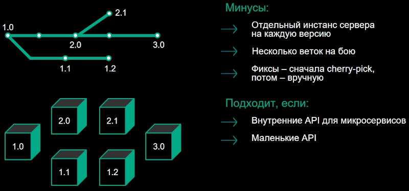
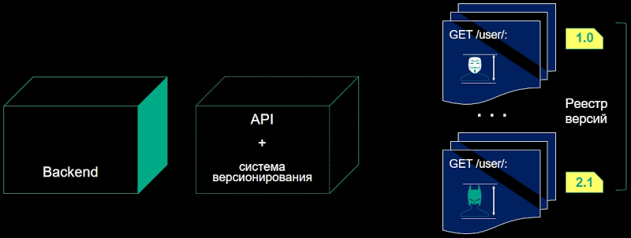
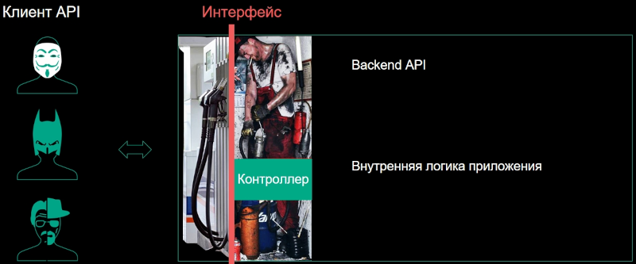
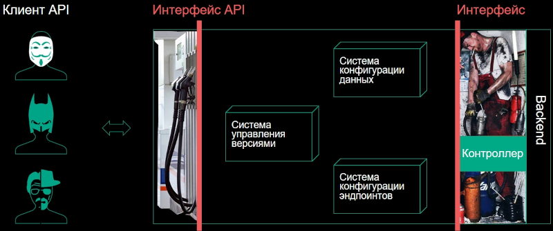
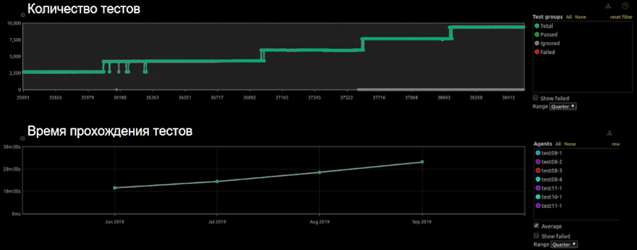
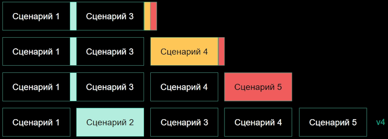
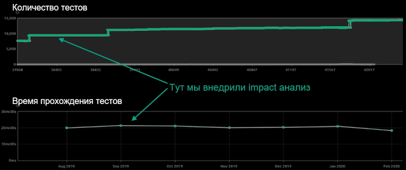

За 21 год существования в SuperJob разработали три версии реализации API для интеграций с бэкендом. Во время разработки последней они решили пересмотреть подход к версионированию. Сейчас в актуальной реализации порядка 379 эндпойнтов, более 900 моделей сущностей и 11 поддерживаемых мажорных версий. Когда проект развивается, вместе с ним меняются и требования к API, а значит неизбежно нарушение обратной совместимости.
Опытом решения этой проблемы поделился Антон Золотилин из SuperJob. Вы увидите самые распространенные решения проблемы версионирования web-API и подход, который реализовал у себя SuperJob. А в качестве бонуса узнаете, как это решение помогает значительно сократить рост затрат на тестирование версий с помощью Impact-анализа.
Одним из примеров нарушения обратной совместимости в процессе развития продукта может быть изменение требований по реализации ролей у пользователя. На этапе MVP для определения роли пользователя достаточно флага: зарегистрированный пользователь или гость. Затем для бизнес-логики приложений уже требуется конкретная роль, которая передается, например, строковым литералом. В дальнейшем бизнесу может понадобиться целая коллекция ролей.
Если API используется строго внутри одной команды разработки, то изменения в коде клиента и сервера можно выпускать в релиз одновременно. Проблемы начинаются, если API используют внешние команды разработки или не совпадают релизные циклы продуктов. Тогда для соблюдения обратной совместимости вам придется одновременно поддерживать старую и новую версии данных и/или требований. В результате вы получите маленького монстрика. А через несколько итераций он превратится в большого монстра.

Конечные пользователи этого монстра, естественно, не увидят, но разработчики, которые пользуются вашим API, вряд ли обрадуются изучению таких простыней. Конечно, можно пометить устаревшими старые поля, эндпоинты, атрибуты и связи, и со временем от них избавиться. Но при активном развитии API в документации все равно накопится чересчур много устаревшей информации.
Версионирование помогает избежать подобных проблем. Просто фиксируйте под номером версии определенный контракт с пользователем, и в зависимости от запрошенной им версии API работайте с ним по этому контракту. Небольшие изменения, не влияющие на пользовательский опыт, фиксируйте с повышением минорных версий. При появлении изменений, нарушающих BC (backward compatibility) — заключайте новый контракт с инкрементом мажорной версии. Когда клиент API будет готов перейти на него, он получит свободный от исторических наслоений API. Пока есть приложения, которые пользуются версиями API, вы будете все их поддерживать. А по мере перевода клиентских приложений на новые версии — старые можно удалять.
Когда разработчики SuperJob искали варианты реализации версионирования API, они сначала пытались найти материалы на эту тему в интернете. Но по запросам вроде «Версионирование API» несколько страниц поиска выдавали только: «Где передавать версию — в хэдере или в URL», и больше ничего. Поэтому они начали собирать информацию по митапам, коллегам, организациям и выделили три основных подхода.
Feature-версионирование — не совсем версионирование, в этом случае у API нет конкретных версий, но проблему обратной совместимости подход решает. Приложение клиента API работает с набором фич. Сервер, естественно, поддерживает полный реестр фич. Когда приложение с ним коннектится, он проверяет какой набор активных фич из реестра поддерживает приложение. На основании этого совпадения сервер знает, в каком формате давать ответ, чтобы приложение не сломалось.

Feature-версионирование
У такого подхода есть минусы. Во-первых, высокий порог вхождения для публичного API. Чем больше фич в реестре, тем сложнее сторонним разработчикам понять, какая фича за что отвечает и как они сочетаются между собой. Со временем реестр растет и поддерживаемые приложением фичи могут вступить в конфликт, если отвечают за одну и ту же часть бизнес-логики.
Поэтому, на взгляд разработчиков Superjob, Feature-версионирование подходит в тех случаях, когда API используют только ваши внутренние команды. Так проще делиться экспертизой в большой области знаний и контролировать использование функционала фич.
Второй подход — это версионирование с помощью систем контроля версий. Им обычно пользуются разработчики библиотек: просто навешивают тэг версии на нужный коммит. В их случае все работает хорошо: они отдали копию своего кода, он запустился где-то у клиента и проблем нет. Но для web-API код запускается именно у вас, а значит на каждую поддерживаемую версию придется поднимать как минимум один отдельный инстанс.
Это и есть главный минус VCS-подхода — отдельные экземпляры сервера на каждую поддерживаемую версию API. Помимо этого вам придется поддерживать, мониторить и тестировать несколько продакшен веток на бою. Со временем ветки версий расходятся все сильнее, а чем больше расхождения в коде — тем сложнее доставлять в них фиксы. При небольшой разнице в коде, можно обойтись патчами или cherry pick, но со временем придется поддерживать каждую версию вручную.

Версионирование средствами VCS
Этот метод версионирования подходит для маленьких API, которые просто и легко поддерживать. А еще для внутренних API микросервисов, они в любом случае используют много инстансов.
Самый распространенный подход Антон Золотилин назвал версионированием через страдания. В него входят различные практики. Например, версии могут разделяться по namespace и нужная подключается в зависимости от запрошенной версии. Классы новых версий могут наследоваться от классов предыдущих версий, а функционал переопределяться. Такая мешанина из подходов средствами языка.
Если свалить всё в кучу для демонстрации подхода, то будет выглядеть как-то так:
Версионирование через страдания
<?php
namespace api\v2;
use api\v1;
class Controller2_7 extends v1\Controller1_8
{
public function process()
{
if ($this->version > 2.3) {
$this->doSomething();
} else {
parent::doSomething():
}
}
}
У подхода есть очевидные минусы. Несмотря на использование ООП и наследование, код все равно приходится дублировать. Из-за сложной логики практически при любых изменениях сначала нужно вычислить, что изменилось для клиента API, внести изменения, а потом еще и задокументировать вручную. И, как у предыдущего подхода, возникает сложность доставки фиксов. Уже при десятке версий, лежащих в разных папках, найти отличия проблематично. Поэтому такой подход лучше использовать только при прототипировании или выпуске MVP.
Команде разработки SuperJob ни один из трех вариантов не подошёл, а свой подход к реализации версионирования они нашли буквально в собственном коде.
В последней API SuperJob используется декларативный и строго специфицированный стандарт JSON:API. При его реализации им пришлось вынести информацию о сущностях в конфиги. Поскольку всё лежит в файлах конфигураций, а конфиги лежат в папках, почему бы не положить всё, что относится к специфике конкретной версии API в отдельную папку и считать её версией? Если написать единый для всех версий движок, который будет инициализироваться набором конфигов, можно на лету собирать нужную версию, изолируя код бэкенда от информации о запрошенной версии и принятия связанных с версиями решений.
Способ новый, поэтому специально для его презентации Антон Золотилин придумал название, которое ассоциируется со сборкой по конфигурации, то есть по чертежам — Blueprints.
Выглядит это так:

Версионирование «Blueprints»
Предположим у вас есть бэкенд, монолит или набор сервисов за фасадом — не важно. Вам необходимо выделить подсистему, которая будет отвечать за API и отделить ее от бизнес-логики. А затем научить её инстанцироваться по конкретным конфигам запрошенной версии.
Приводить пример кода и конфигов, которые используют в SuperJob, особого смысла нет. У каждого из вас своя реализации API, свои фреймворки, свои решения. У кого-то — API реализует restful, у кого-то — RPC. Поэтому давайте рассмотрим основные принципы.
У API много аналогий с обычным интерфейсом из парадигмы ООП. У него есть набор эндпоинтов — это методы интерфейса. Есть входные и выходные данные эндпойнтов — это сигнатура методов. В эндпоинтах, помимо скаляров, могут использоваться структуры данных — это пользовательские классы.
Декларация API, которую вам надо вынести в конфигурационные файлы — это описание эндпоинтов (методы и их сигнатуры) и структур данных сущностей, используемых в API (пользовательские классы).
Представим в виде стандартного интерфейса простенький API с методами получения коллекции пользователей и условиями их фильтрации. Например, регистрация нового пользователя, добавление ролей и связей с другими пользователями:
Версионирование Blueprints
<?php
interface API
{
public function getUsers(Condition $condition): User[];
public function createUser(User $user): User;
public function addFriendship(
User $user,
User $friend
);
public function addUserRole(
User $user,
Role $role
);
}
Продемонстрируем, какие подсистемы необходимо выделить в слой, отвечающий за API и за что каждая их них будет отвечать.
Несколько лет назад была популярна вирусная реклама про внутренности кофе-машин, банкоматов и прочих аппаратов, которая показывала их «грязное нутро».

Типичная реализация API
Всё это похоже на большинство реализаций API. Для клиентов API все выглядит чинно и благородно, а в его реализацию на бэкенде новичков лучше не пускать, потому что они пугаются и увольняются. За интерфейсом (API) обычно находятся контроллеры, которые обращаются к внутренним сервисам приложения и формируют ответ.
Ваша задача при реализации версионирования Blueprints — в первую очередь разделить интерфейс на два: API, который заключает контракт с клиентскими приложениями и некий фасад, точнее — набор интерфейсов, через которые сервис API будет обращаться к бэкенду.

Вынесение подсистем API
В слое, согласующем эту «пару» интерфейсов, надо реализовать три системы. Во-первых, систему конфигурации данных, которая умеет брать сериализованные DTO, превращать их в модели, отдавать на бэкенд и из ответа бэкенда формировать понятные клиентам API данные. Во-вторых, cистему конфигурации эндпоинтов, которая занимается маршрутизаций, ограничением доступа, описанием входных и выходных данных, а также описанием фильтров и сортировки коллекций. В-третьих, систему управления версиями, которая собирает две предыдущие подсистемы на основе конфигов, полученных из папки с запрошенной версией.
Теперь рассмотрим, как нюансы реализации API описывать в конфигах. Разработчики SuperJob используют для конфигурационных файлов API формат yaml, вы можете использовать любой, который вам нравится.
В примере ниже — конфиг эндпоинтов для RESTful реализации API. Секция endpoints содержит все эндпоинты API, два уровня ее подсекций содержат URI ресурса и методы HTTP, которые реализованы для данного ресурса. В случае реализации на основе RPC вместо URL и HTTP-метода достаточно указать название метода API (например, getUsers). Далее идет описание работы эндпоинта и его связь с кодом бэкенда.
Секция class служит для указания обработчика. Вы можете завести вместо этого две секции: controller и action, для обработки запросов, свойственных некоторым фреймворкам.
Секция query содержит информацию о запросе, который ожидает эндпоинт, в данном примере — описание поддерживаемых фильтров и сортировок. Секция out в данном примере описывает возвращаемые эндпоинтом сущности: коллекцию пользователей.
Секция constraints пригодится для запросов на изменение, в ней можно описать ограничения на доступ к функционалу эндпоинта. Валидаторы для входных данных и доступа можно описать в подсекции validation, указав класс и входные параметры (в примере константный параметр с названием проверки и указание где в payload брать второй параметр, userId):
Конфигурация эндпоинтов
# /configs/1.0/endpoints/config.yml (REST)
endpoints:
/user/:
get:
class: app\actions\GetUserAction
query:
filters:
town: Town[] required
sort: [nickname, birthdate]
out: User[]
patch:
class: app\actions\UpdateUserAction
constraints:
validation:
class: validators\AccessValidator
parameters:
rule: editProfile
userid: body:user.id
Вариант кода запроса коллекции пользователей для этой конфигурации:
Запрос коллекции пользователей
<?php
/*
файл /app/actions/GetUserAction.php
Обрабатывает запрос GET /user/
или запрос {«method»: «getUsers», …} для RPC-подобных API
*/
namespace app\actions;
class GetUserAction extends ApiGetAction
{
public function action(
Filters $filters,
Sort $sort
): User[] {
$users = $this->repository->find(
$filter,
$sort
);
//…
return $this->format($users);
}
}
Пример кода конвертации DTO в модели и обратно:
<?php
/* somewhere */
$userDto = json_decode($request->getBody());
//…
$user = UserHydrator::fromDto($userDto);
//…
/**
* @var UserRepository $repository
* @var User $user
*/
$user = $repository->save($user);
//…
$userDto = UserHydrator::toDto($user);
//…
return json_encode($userDto);
Пример конфигурации сущности User с множественной связью Town
# файл /config/1.0/dataMapper/entities.yml
entities:
User:
model: orm\User
repository: orm\UserRepository
attributes:
nickname:
type: string required
getter: getLogin
relationships:
towns:
type: Town[]
getter: getTowns
setter: getTowns
В SuperJob также разработали систему событий, которые инициируются на разных этапах сохранения входящих сущностей. События обрабатываются обработчиками, которые можно указывать в конфигах этих сущностей. Они используют наборы правил видимости для фильтрации доступа пользователей, чтобы скрыть часть экземпляров коллекции от определенной группы пользователей.
В редких случаях может возникнуть необходимость дополнительного использования Feature-версионирования. Feature прикрепляют к версиям, и в дальнейшем их активность можно проверить в коде бэкенда и коренным образом изменить его поведение. За 12 версий разработчиками SuperJob было внедрено всего 3 Feature. Например, чтобы после первых двух версий запретить HTTP-методу использовать PUT, который не поддерживается стандартом JSON:API.
Вот набор некоторых инструментов и библиотек, которые сэкономят вам время, при реализации такого способа версионирования.
1. Для того что бы превратить конфигурацию в набор абстракций вашего метаязыка описания API, вам потребуется парсер. Исторически сложилось, что при разработке в Superjob использовался Peg парсер, хотя есть и другие реализации парсеров. Например, AST Parser — возможно вам он подойдет больше.
2. Чтобы не собирать раз за разом слепок API для нужной версии, удобнее воспользоваться автогенерацией и закэшировать готовые абстракции, например, с помощью nette/php-generator.
3. Для превращения DTO в нужные модели и обратно подходит любой конвертер/билдер, например, JMSSerializer. Но у него есть свои недостатки — при большом количестве ответов он работает медленно и довольно тяжелый в плане поддержки. Поэтому в SuperJob перестали им пользоваться, а написали свой сериалайзер Hydrator, который быстро конвертит все сущности. Но для начала вполне подойдет JMSSerializer, тем более, что на него много документации в интернете. .
4. Имея конфиги, вы можете по первому же изменению их файлов обновлять документацию в формате OpenApi тем же Swagger’ом.
Если у вас не будет строго регламентированной спецификации API, нет смысла пытаться версионировать с помощью конфигов. Выберите строго специфицированный стандарт API или разработайте свою спецификацию. Например, если у вас API на GraphQL — вы счастливчики, у вас уже наполовину все готово: конфиги GraphQL это файлы, осталось только научить маршрутизацию подтягивать нужные конфиги запрошенной версии.
После того как вы вынесли API за пределы бэкенда и изолировали код, можно пилить сервисы, модифицировать монолит и не бояться сломать API. Потому что сам движок API теперь лежит отдельно и на лету собирается из версионированных конфигов.
Документация тоже создается автоматически — как спецификации самого API, так и, например, истории изменений (changelogs). А выпуск новой версии — это просто копирование папки с разрабатываемой версией в папку с названием новой версии. При этом она сразу становится доступна. Поэтому выпуск новых версий можно вынести в автоматику CI/CD и разработчикам не придется отвлекаться от своих задач.
На начальном этапе разработка требует значительных трудозатрат. Особенно, если ваша API не имеет строгой спецификации. Сначала придется ее разработать, а потом вынести все это в конфиги. Зато дальше будет намного легче. Разработчики SuperJob уже полгода не смотрели в движок API и ничего в нем не меняли. Просто выпускают новые продуктовые эндпойнты.
Есть еще один небольшой минус — у спецификаций в IDE нет поддержки. После того, как разработчики SuperJob изобрели свой метаязык конфигураций, его поддержку им тоже пришлось реализовывать самим. Но делать плагины под PHPStorm — очень интересное дело. В результате у них теперь работает поиск использования и автозамена для класса. В конфигах тоже все меняется, указывается и подсвечивается, например, в каких версиях этот класс используется. Пока нет только автоподстановки, но они планируют ее разработку в ближайшем будущем. В конфигах тоже все меняется, указывается и подсвечивается — например, в каких версиях указанный класс используется. Пока нет только автоподстановки, но они планируют ее разработку в ближайшем будущем.
Как тестируют версии API в SuperJob? Для функционального тестирования версий API используется тестовый фреймворк Behat. Команда SuperJob немного расширила его функционал и помечает тестовые сценарии тэгами с версиями, для которых он применим. Соответственно, на тестовой сборке каждый сценарий запускается для каждой версии, которая активна и попадает в указанный для сценария диапазон версий.
С ростом количества версий и сценариев для их тестирования пропорционально растет и время, необходимое для прогона всех тестов. Но способ версионирования Blueprints сам подсказал разработчикам, как сократить это время, благодаря Impact-анализу.
Сначала проиллюстрируем проблему:
Тестирование версий
Предположим у нас есть пять сценариев в первой версии. В каждой новой версии мы проверяем эти пять сценариев, чтобы убедиться, что с выпуском новой версии ничего не сломали. И даже без добавления новых сценариев с каждой версией происходит прирост по времени.
Вот так выглядели графики тестовых прогонов до того, как команда SuperJob начала использовать Impact-анализ:

Графики тестовых прогонов до использования Impact-анализа
Каждая ступень на графике (выпуск новой версии) — это плюс 2,5 тысячи тестов. И если на первых версиях затраченное на тесты время находилось в диапазоне 12-13 минут, то через три версии это уже было полчаса. Бесконечно ставить костыли, горизонтально масштабировать, раскидывать по фича-файлам, которые можно запустить в разных процессах параллельно, — все равно не получится. Чем больше версий вы поддерживаете, чем больше функционала докидываете, тем дольше проходит стадия тестирования, а следовательно — и релиза. На этом этапе разработки API и оптимизации тестов разработчики и обнаружили в коде жемчужину.
У вас есть сценарий, который вы гоняете по нескольким версиям, чтобы проверить, что он не падает, но сам сценарий неизменен. У него одинаковые исходные условия и условия проверки для всех версий. Код, который не зависит от версии, вы вынесли отдельно. Сама API не меняется от версии к версии, бэкенд — тем более, а ваши версии отличаются только тем, что лежит в конфигах.
Поэтому при первом прогоне по версии вы можете считывать и передавать в систему дайджесты всех используемых в данном сценарии конфигов сущностей и эндпоинтов. И если в следующей версии используется тот же самый набор дайджестов, то при повторном прогоне результат будет таким же. А значит проводить такой тест необязательно. Только если при сравнении с эталонной версией появляется хотя бы небольшое расхождение, тогда для этой версии надо запускать тест и принимать его за новую эталонную версию.
Допустим, второй сценарий разработчики долго не трогали, он работал с одним и тем же набором конфигов. Четвертый сценарий не менялся на протяжении двух версий, а пятый — на протяжении трех. Благодаря Impact-анализу можно выкинуть лишние прогоны по версиям и на этом искусственном примере получить в два раза меньше прогонов:

Impact-анализ
Все зависит от того, насколько различаются ваши версии. Impact-анализ позволяет тестировать только реальные изменения между версиями.
Несмотря на то, что в API Superjob продолжали добавляться версии, а количество тестовых сценариев перевалило за две с половиной тысячи, после внедрения Impact-анализа продолжительность сценариев стабилизировалась на 20-ти минутах:

Графики тестовых прогонов после Impact-анализа
Разработчики SuperJob нашли собственную реализацию решения проблемы, которая при вынесении спецификации API в конфигурационные файлы, показала отличные результаты. При дальнейшей модернизации подхода к работе с версиями, во время проведения тестирования они начали использовать Impact-анализ и смогли прекратить временной рост тестов по версиям.
Все эти находки могут быть применены в других системах. А в SuperJob уже планируют новые доработки.
Видео выступления Антона Золотилина на конференции PHP Russia 2021.